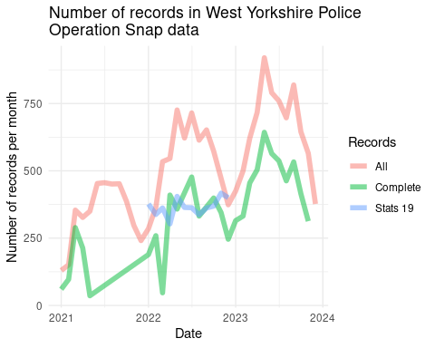
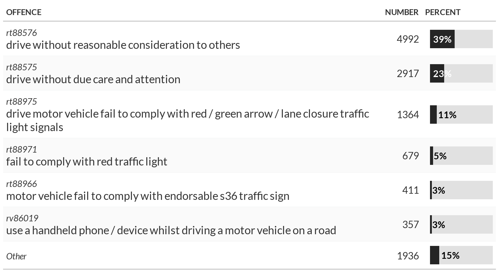
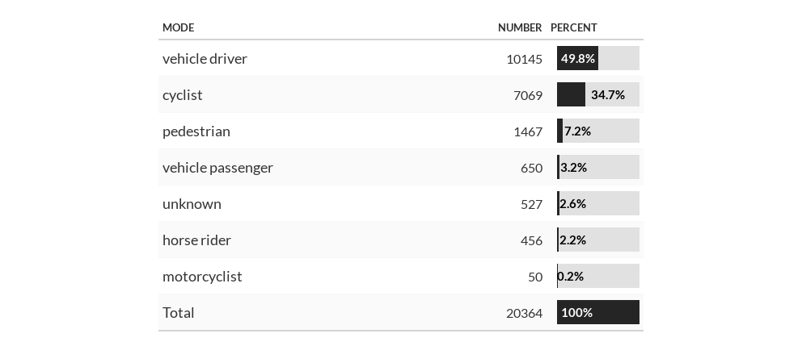
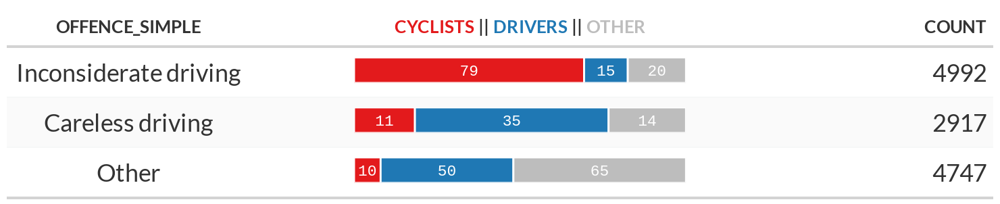
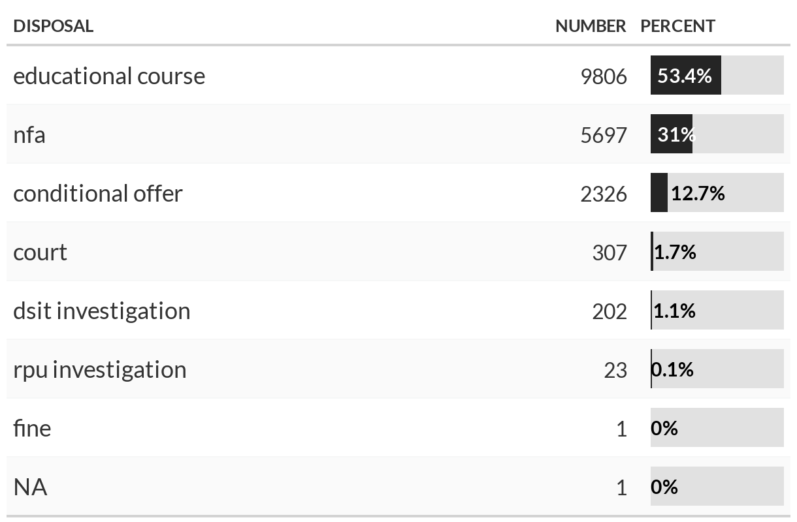
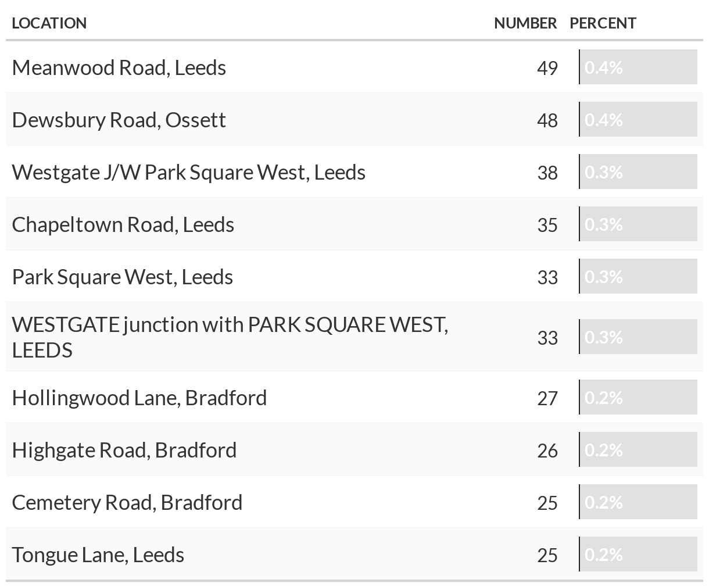

Road User video evidence of road traffic offences: Preliminary analysis of Operation Snap data and suggestions for a research agenda
Graham Farrell ![]()
Robin Lovelace
Steve O’Hern
Keywords
Cycling, Hotspots, Road safety, Video evidence, Dashcam, Near misses
Abstract
This study uses data from Operation Snap (OpSnap), the UK police’s national system to receive road users’ video evidence of road traffic offences. Data from one police force area for the three calendar years 2021 to 2023 (N = 18363 records) is analysed. Of submitted cases, 49.9% were from vehicle drivers, 34.4% were from cyclists, and 7.4% were from pedestrians. The most common offences were driving ‘without reasonable consideration to others’ or ‘without due care and attention’.
A research agenda using OpSnap data is outlined: comparative analysis of submission type, source, hotspot locations, and case disposal should be undertaken at national, regional, and local levels; research into disposal-related decision-making, video quality, and the role of supporting evidence should identify good practice; further study of video content, offence concentration (recidivism, repeat submitters of evidence, spatial hotspots) and case progression including court cases, holds significant potential to inform policy and practice locally, nationally and internationally.
Introduction
Dangerous and criminal driving are significant problems that take many forms (Simon and Corbett 1996; Corbett 2003-06-01, 2003-06, 2010). Across Great Britain there were an estimated 1,711 fatalities resulting from a road traffic crash in 2022 and 135,480 causalities reported across all severities (Department for Transport 2023b).
Traditionally, road safety research has relied on retrospective analysis of crashes to assess and enhance road safety (Towards Zero: Ambitious Road Safety Targets and the Safe System Approach 2008). However, relying on historical crash data poses several challenges. Crashes are rare events (Elvik 2006), requiring extended periods, often at least five years, of data to obtain statistically significant estimates (Songchitruksa and Tarko 2006). Furthermore, the reactive nature of crash analysis means that safety improvements only follow after crashes occur, which is both inefficient and ethically problematic.
Surrogate safety measures, offer a proactive alternative to identify road safety issues (Songchitruksa and Tarko 2006). These measures do not depend on crash data but instead use more frequently observable, less severe, traffic events to identify road safety issues (reference). One prominent surrogate measure is traffic conflicts (reference). A traffic conflict occurs when road users’ paths intersect, with a risk of collision if no action was taken (reference). The concept of using traffic conflicts as a surrogate measure was notably illustrated by Hyden’s safety pyramid (reference). This pyramid represents the spectrum of traffic events from safe, undisturbed passages at the base, to severe, rare crashes at the top. Hyden’s model demonstrates that the inverse relationship between crash frequency and severity. Understanding this relationship allows for the prediction of severe crashes based on the more common, less sever conflicts.
Traditional methods for observing traffic conflicts have relied on manual observation, which is resource intensive. This study highlights the potential of using open access data from Operation Snap, the UK police’s national system to receive road users’ video evidence of road traffic offences as a surrogate measure of road safety.
Cyclist crashes are underreported in police recorded datasets (Elvik and Mysen 1999) and the extent of injuries sustained by cyclists may be higher when hospital-recorded cases are counted (Janstrup et al. 2016). Under-reporting in police datasets is likely to be greatest for minor injuries, while records are seldom kept when a collision or injury is avoided due to riders or drivers taking evasive actions (Ibrahim et al. 2021). These incidents are often referred to as “near-misses” (Ibrahim et al. 2021)
Commuter cyclists in the UK experience a near miss for every six miles of riding (Aldred and Crosweller 2015), and concern over near misses are a key reason people choose not to cycle (Sanders 2015), being associated with inattentive driving, aggressive driving, driving too fast, passing too close, being car-doored, and being cut off by turning drivers (Sanders 2015). In their review of near miss cycling crashes, Ibrahim et al. (2021) highlighted the need for better data on near misses to inform safety research.
Close passes are the most common type of near miss reported by cyclists, and are associated with collisions resulting in injury (Aldred 2016). A ‘close pass’ refers to when a vehicle passes too close to a cyclist, which is defined in the UK as less than 1.5 metres away at 30mph (50kph). Close passes take different forms including the ‘punishment pass’ by angry drivers for a perceived slight such as causing the driver to slow down (Cubbin et al. 2024). There is no specific law in the UK Road Traffic Act 1988 for driving too close to cyclist, but two are commonly applied for careless driving: RT88575- Drive without due care and attention; and RT99576 – Driver without reasonable consideration to others - and these are prominent in the analysis that follows.
This study highlights the potential of using open access data from Operation Snap, the UK police’s national system to receive road users’ video evidence of road traffic offences. Operation Snap, often referred to informally as ‘OpSnap’, was piloted by North Wales police in October 2016 and adopted by all Welsh forces by 20181. It is now in operation nationally across England and Wales, each police force offering its own submission portal for road users to submit video evidence. The nature of video submissions and the related expectations are summarised on the website of one Police and Crime Commissioner as follows:
- The secure form is for traffic offences, it is NOT for submitting footage of road traffic collisions, any other offences or for parking issues.
- The car registration number of the offending vehicle must be clearly visible.
- The public should be prepared to sign a witness statement and possibly give evidence in court.
- Statements for OpSnap can only be accepted from persons aged 18 or over. If you are under 18 the incident should be reported by email to [email]2.
This is, to our knowledge, the first research study to use this dataset. As such, the study is offered as proof-of-concept of the potential for analysis of this data, and of its further potential, including understanding the factors associated with cyclist near miss incidents. Following analysis and discussion of three years of data for one police force area, the study outlines a research agenda designed to inform policy and practice.
Methods and data
Open access data from West Yorkshire Safer Roads – OpSnap was used for this study, the media submissions portal having opened in July 2020. The West Yorkshire Police (WYP) data used here spanned calendar years 2021, 2022 and 2023. For the year 2021 there was less than half the cases of either 2022 or 2023, which could reflect reduced road use during the COVID-19 pandemic and fewer people being aware of OpSnap when it commenced.
The dataset is a tabulation of cases submitted to the West Yorkshire Safer Roads OpSnap web portal. The terms ‘record’ and ‘case’ are used interchangeably here to refer to a record in the OpSnap database, each of which represents the separate submission of video evidence by a road user.
The portal allows members of the public to submit video footage of suspected traffic offences committed by motor vehicle drivers. Video footage is commonly recorded from on-board cameras. For motor vehicles these cameras are typically mounted on or near the vehicle front dashboard, known as ‘dash cams’. One source examined GB Driving Licence data to find that by early 2024, close to a third of private and commercial vehicle in the UK had a dash cam (“Dash Cam Submissions to Police Rise with Operation Snap” 2024). For cyclists, footage is commonly recorded using helmet or handlebar-mounted cameras. The proportion of cyclists using these cameras is unknown but anecdotal evidence suggests increased usage, with many choosing to record rides in case an incident occurs.
Complainants upload footage and complete a short form that includes their personal details, the details of the vehicle involved including registration, make, model and colour, the location and time of the incident, and details of the camera used to record the footage. Only vehicle offences can be reported as the registration number of any offending vehicle is required and must be legible in footage. The open access data is a deidentified summary of submitted cases with informtion on: mode of transport of the person reporting, offender vehicle details (make, model, colour), offence code, recommended disposal, date of submission, district, and offence location. The offence location is typically a street name and town or city name, or an intersection, and examples included: ‘A58 Godley Road, Halifax’, ‘Keighley Road, Silsden’ , ‘Woodhouse Lane A660, Leeds’. For this study, approximate geolocations were obtained using Google API, restricting cases to within West Yorkshire. Further aspects of the data, their uses and limitations are discussed in what follows.
Results
There were 18363 records in the dataset for the three-year study period, with a strong upward trend, as shown in the monthly counts presented in Figure 1. Some records lacked either an offence (5707, 31.1%) or a location (3825, 20.8%), or both, leaving 48.1% or 8831 complete records. There was a distinct seasonal pattern to reporting, with significant increases in summer months.
Of the 12656 records with an offence, the most common offences were Driving without reasonable consideration to others (rt88576) and Driving without due care and attention (rt88575). This is presented in Table 1, which shows the number and percentage of records by offence type, showing the top 6 offence types and the remainder grouped as ‘Other’. As previously noted, a high proportion of cases did not include information on the reported offence, with the most common offences being Driving without reasonable consideration to others (rt88576), and Driving without due care and attention (rt88575). Within the road traffic act these offences are related to careless driving and drivers are subject to similar penalties.

Vehicle (mostly car and van drivers with dashcams) driver and cyclist reporters dominate reporting for all records, as illustrated in Table 2. Half of cases were reported by vehicle drivers, a third by cyclists, seven percent by pedestrians, with over two percent by horse riders and less than one percent by motorcyclists.

The cross-tabulation of reporting mode and offence type is shown in Table 3. The table reveals some interesting tendencies. While 39.4 percent of all offences are for inconsiderate driving, they make up the bulk of offences reported by cyclists, with 78.7 percent of all offences reported by cyclists being for inconsiderate driving. Drivers are proportionally 4.9 times more likely to report other types of offences as cyclists, while other reporting modes are most likely to report other types of offences, being 6.3 times more likely to report other types of offences as cyclists. While further research is needed, this makes sense if physically-vulnerable cyclists are most concerned with the dangerous driving of vehicles, whereas drivers also report other types of road traffic offence, with pedestrians and others also more likely to encounter other types of offence.

Disposal categories assigned by police are shown in Table 4. Roughly a third of cases resulted in no further action, and for most of the remainder drivers were required to undertake an education course. Conditional offers, that is, drivers being offered a reduced penalty for admitting guilt, were the third most common outcome (XX EXPLAIN FURTHER?). Close to two percent of cases went to court and a further one percent underwent further investigation.

There are 8801 unique locations (addresses) in the data, with the most common locations shown in Table 5.
INSERT Table 5 AND/OR Map (TO BE INCLUDED)

Discussion
Drawing on the work and findings described above, this discussion outlines a research agenda. The breadth and depth of potential policy-relevant work that could be undertaken is, we suggest, enormous. While this preliminary list will not prove exhaustive, if it stimulates or informs further research then it will have achieved its objective.
Cyclists undertake two percent of road miles in the UK (Department for Transport 2023a). Other things equal, this suggests that with respect to distance travelled, cyclists were around 20 times more likely to submit evidence of a road traffic offence than vehicle drivers and other road users in West Yorkshire.
Over 90 percent of offences reported by cyclists were for driving without consideration for other road users and without due care and attention. This is consistent with the phenomenon of ‘close passes’ in the cycling safety literature (Aldred 2016; Cubbin et al. 2024). It suggests the OpSnap data holds the potential for further analysis to inform knowledge about the nature of close passes generally. For example, it should be possible to identify hotspot locations. As with much of the further research outlined here, this the potential to inform preventive policy and practice relating to police interventions, driver behaviour, the design of roads and roadside environments.
There was an increase in submissions over time between 2021 and 2023. This may reflect changing levels of road use during and after the Covid-19 pandemic, increased awareness of OpSnap, or increased video camera ownership levels. Comparative analysis including other police jurisdictions will be able to determine whether this experience is common or isolated. We hypothesise that it will prove to be a common experience and that that the volume of submissions will continue to increase in the near and middle term (though ideally, a decline would occur as roads become safer).
If submission volumes continue to increase, means of informing triage and prioritisation of cases will be increasingly valuable. Triage systems are probably already in use in different areas, and research to identify and inform best practice should be undertaken. Likewise, research to determine best practice in determining disposal recommendations will prove fruitful. It may provide feasible, perhaps using machine learning, to develop automated means of triage, determination of offence type and disposal. Research to gauge the differential effectiveness of disposal measures is needed, starting with measures of recividism.
Within the trend of increasing video submissions there were distinct seasonal patterns. Seasonal variation in cyclists’ submission reflect seasonal (weather and other) influences on cycling prevalence and duration. This suggests seasonal variation in preventive responses might be tailored to need. It is well established that crime is highly concentrated along whatever dimension is examined (Farrell and Pease 2017). With respect to video evidence this will include recidivists (repeat offenders), repeat submitters of evidence (who may or may not be repeat victims/survivors), the concentration of incidents (close passes, near misses and crashes) at certain times and places, with different types of experiences concentrated among certain types of road users. For example, we hypothesise that close passes are more likely to be reported by cyclists and horse riders than vehicle drivers, both due to the nature of the road user interactions and the relative risk associated with the manoeuvre. As such, the types of incidents reported by vehicle drivers would be systematically different, indicating a need for different investigative and preventive approaches. Policing and preventions efforts focused on where problems are concentrated are more resource efficient – it is the foundation of problem-oriented policing (see e.g., (Laing (2010); Scott and Maddox (2010))- and research using video submissions holds the potential to analysis of problem concentrations.
Evidence submitted by cyclists was the focus here. However, Operation Snap data offer potential for analysis of data from other road user sources. Studies focused on specific types of road user will prove informative with respect to policy and practice. Dash cam submissions by motorists offers great potential to inform other aspects of road safety. Research into submissions by pedestrians, horse riders and motorcyclists should prove viable to improve the safety of these parties. There were over four hundred submissions by horse riders in West Yorkshire, which means there will be thousands nationwide. The British Horse Society1 and others may be interested in this data being used to inform the safety of horses and riders. The British Motorcyclists Federation2 may be interested in research promoting the safety of its members and in why motorcyclist submissions are relatively infrequent .
This was a case study of West Yorkshire but each of the 43 police forces in England and Wales collates OpSnap data, and our preliminary scoping of individual force websites suggests OpSnap data is publicly available nationwide. This suggests the potential for development of a national OpSnap dataset. A feasibility study is needed to establish the availability and compatibility of the data from different forces. Should a national dataset prove feasible it holds potential for national-level, cross-regional, and comparative analyses of patterns and trends. A national dataset will enhance the possibility for cross-national comparative analysis and international cooperation in road safety. It holds the potential for the development of rankings according to different criteria and, thereby, potential performance indicators.
Comparison by complainant mode of transport, reported offense type and disposal, subdivided by other characteristics, is needed. Determining which type of submission - by which type of road user for example - is more likely to result in a recommendation of court proceedings, may help refine police investigations. For example, are submissions by cyclists (or horse riders) more or less likely to result in court proceedings than those by motorists? If so, why? What is the role of substantive issues, and to what extent are decisions affected by video quality? Further work with police investigators should inform best practice in the processing and further investigation of submissions. How are disposal options determined? Cross-police force comparative analysis may inform national best practice guidelines.
A constraint on the present analysis was the nature of the publicly-available data. A pilot project should be undertaken in collaboration with police to establish the potential to further enhance policing and public safety using non-public aspects of the submissions data. This would require working partnerships and a secure research platform to meet GDPR requirements. Such collaborative approaches are increasingly common in health, medicine, and policing research.
Video footage holds significant potential for further analysis, both qualitative and quantitative. Police investigations might be improved by research to identify and promote good practice in the assessment of footage, its use in determining disposals, further investigations, and prosecutions. What type of footage works best in the courtroom, and how is it best identified and prepared? What is the potential for machine learning to identify, clean, and prepare footage of the most serious submissions? There are also likely to be lessons that can be learned for how footage is gathered, edited and submitted by road users. More generally, video footage might be used to identification risk factors, that is, the types of situations in which crashes, near misses, and close passes occur. This promises the potential to inform policy and practice in ways that ameliorate risk factors. Within this area of research, analysis from dash cams is likely to inform different practices than that from cycle-cams, that from pedestrians, horse riders and motorcyclists, and so on.
Some research into the relationship between video footage and supporting written evidence is needed. Is written supported evidence always needed? Which is deemed most important by police, and which by courts? What are the characteristics of strong supporting written evidence, and what are the characteristics of strong video evidence? Are both needed or can a weakness in one be overcome by particularly strong aspects in the other?
The spatial analysis undertaken here was obliged to use data for ‘all’ video submissions. We were unable to separate the submissions by cyclists because, in the publicly-available data, locations could not be matched to individual cases: they were scrambled to ensure anonymity for GDPR purposes. An obvious next step, in the context of a secure research platform, would be spatial analysis for different types of road users, for different types of incidents, for incidents resulting in different disposals, and so on. Hotspots and spatial clustering are likely to vary by type of road user, type of incident, day or week, time of day, and so on.
Creating opportunities to access video submission data would be an alternate approach that facilitates research into the nature of footage. Another option would be research using existing online videos, of which there appear to be many thousands on social media including those posted by police forces. Such research will face different methodological challenges but could provide proof-of-concept of the potential for analysis of OpSnap footage.
OpSnap data should be compared to, and integrated with, other road safety datasets. For example, spatial analysis that was Integrated with Strava data (road use data by cyclists and pedestrians), Google road use and other data, may facilitate exposure-based measures rather than the counts used here. The use of rates will enhance the identification locations with higher risk because based on their volume of traffic: different types of risk need to be gauged. Comparison and integration of OpSnap and Stats193 is an obvious starting point. To what extent do OpSnap and Crashmap incidents overlap? To what extent are they complementary? To what extent do they identify the same or different types of problems?
More generally, OpSnap data holds potential for use in the evaluation of experimental interventions. Depending on the level of submissions there is the potential to use the data to assess effects before and after interventions, and to identify comparison (control group) sites. Different road safety interventions imply different resource needs. Ideally, evaluations would include cost-benefit analysis of the portfolio of social and economic costs involved, including the cost of death and injury.
Conclusion
This study offers what we believe is the first study using the open access Operation Snap data. It provides proof-of-concept that OpSnap data holds considerable research potential. It has the potential to inform policy and practice promoting road safety. Drawing on the analysis of the West Yorkshire data, a research agenda was outlined. This preliminary list will prove far from exhaustive. While aspects of that agenda may appear ambitious at the time of writing, we suggest that the present study will have achieved one of its aims if this agenda is rapidly superseded by further research.
The focus here was video evidence submissions by cyclists. Relative to distance travelled by cyclists, their submissions were around 20 times over-represented in the West Yorkshire data. This was the justification for our focus. The disproportionality likely reflects the vulnerability of cyclists relative to motor vehicle users when the two forms of transport interact, and when close passes, near misses and crashes occur. Our primary conclusion is that further research into video submissions to Operation Snap holds significant potential to inform the future of road safety for a broad range of road users.
References
Aldred, Rachel. 2016. “Cycling Near Misses: Their Frequency, Impact, and Prevention.” Transportation Research Part A: Policy and Practice 90 (August): 69–83. https://doi.org/10.1016/j.tra.2016.04.016.
Aldred, Rachel, and Sian Crosweller. 2015. “Investigating the Rates and Impacts of Near Misses and Related Incidents Among UK Cyclists.” Journal of Transport & Health 2 (3): 379–93. https://doi.org/10.1016/j.jth.2015.05.006.
Corbett, Claire. 2003-06-01, 2003-06. Car Crime. 1st edition. Cullompton: Willan.
———. 2010. “Driving Offences.” In. Willan.
Cubbin, William, Kjell van Paridon, Helen Keyes, and Matthew Timmis. 2024. “Close Passes Caught on Camera – How Knowledge and Behavioural Norms Relate to Perceptions of Liability When Cars Overtake Cyclists.” Transportation Research Part F: Traffic Psychology and Behaviour 100 (January): 308–22. https://doi.org/10.1016/j.trf.2023.12.002.
“Dash Cam Submissions to Police Rise with Operation Snap.” 2024. https://www.icompario.com/en-gb/guides/dash-cam-police-submission-statistics/.
Department for Transport. 2023a. “Reported Road Casualties in Great Britain: Pedal Cycle Factsheet, 2022.”
———. 2023b. “Reported Road Casualties Great Britain, Annual Report: 2022.” GOV.UK. https://www.gov.uk/government/statistics/reported-road-casualties-great-britain-annual-report-2022/reported-road-casualties-great-britain-annual-report-2022.
Elvik, Rune. 2006. “Laws of Accident Causation.” Accident Analysis & Prevention 38 (4): 742–47. https://doi.org/10.1016/j.aap.2006.01.005.
Elvik, Rune, and Anne Mysen. 1999. “Incomplete Accident Reporting: Meta-Analysis of Studies Made in 13 Countries.” Transportation Research Record 1665 (1): 133–40. https://doi.org/10.3141/1665-18.
Farrell, Graham, and Ken Pease. 2017. “Preventing Repeat and Near Repeat Crime Concentrations.” In.
Ibrahim, M., J. Haworth, N. Christie, T. Cheng, and S. Hailes. 2021. “Cycling Near Misses: A Review of the Current Methods, Challenges and the Potential of an AI-embedded System.” Transport Reviews 41 (3): 304–28.
Janstrup et al. 2016. “Understanding Traffic Crash Under-Reporting: Linking Police and Medical Records to Individual and Crash Characteristics.” Traffic Injury Prevention 17 (6): 580–84. https://doi.org/10.1080/15389588.2015.1128533.
Laing, Colleen. 2010. Aggressive Driving. Problem-Oriented Guides for Police Problem-Specific Guides Series 61. U.S. Department of Justice.
Sanders, Rebecca L. 2015. “Perceived Traffic Risk for Cyclists: The Impact of Near Miss and Collision Experiences.” Accident Analysis & Prevention 75 (February): 26–34. https://doi.org/10.1016/j.aap.2014.11.004.
Scott, Michael, and David K. Maddox. 2010. Speeding in Residential Areas, 2nd Edition. Problem-Oriented Guides for Police Problem-Specific Guides Series 3. U.S. Department of Justice.
Simon, Frances, and Claire Corbett. 1996. “Road Traffic Offending, Stress, Age, and Accident History Among Male and Female Drivers.” Ergonomics 39 (5): 757–80. https://doi.org/10.1080/00140139608964497.
Songchitruksa, Praprut, and Andrew P. Tarko. 2006. “The Extreme Value Theory Approach to Safety Estimation.” Accident Analysis & Prevention 38 (4): 811–22. https://doi.org/10.1016/j.aap.2006.02.003.
Towards Zero: Ambitious Road Safety Targets and the Safe System Approach. 2008. Paris: Organisation for Economic Co-operation; Development. https://www.oecd-ilibrary.org/transport/towards-zero_9789282101964-en.